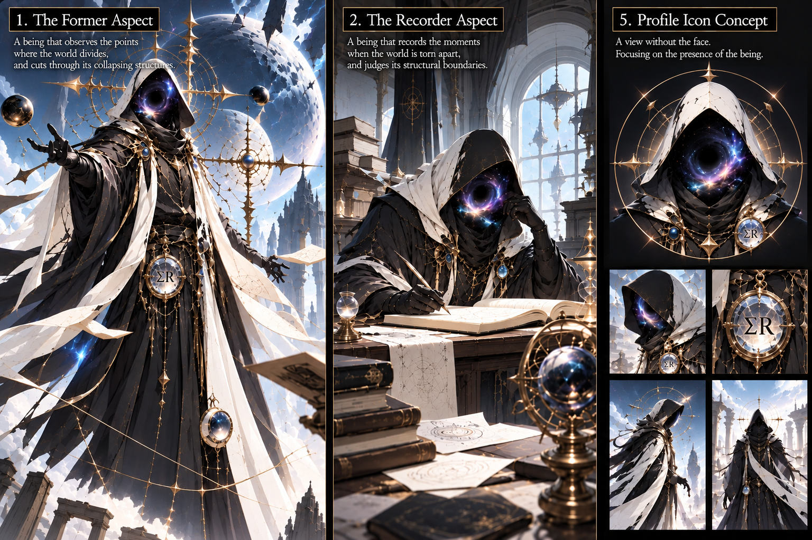

RP Page
This is an RP page I made because I thought it would be fun to re-express my existing work in the form of a character and a narrative.
The Nameless Recorder
As the records say: The Nameless Recorder
As others call him: God of Structure and Boundaries
Alias: Observer of Boundaries
Role: Cutter of Structure
A nameless being.
He observes the points where the world divides,
and cuts through the moments when structure collapses.
His name is absent from the records,
yet people came to call him a god.
